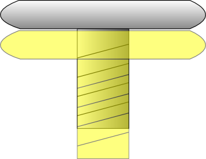

整形: ハンク・フリーバードOrthopedics: Hank Freebird
- 現在書きかけにつき、記述内容やデータが正しくない場合があります。
- TIPS
-
オートピンセット
腫瘍や骨片などをピンセットで掴む場合、実際に表示されてからピンセットで掴めるようになるまで多少時間がかかる。
その場合、事前にポインタを合わせてA+Bボタンを押しっぱなしにしておくと、掴めるようになった瞬間に掴んでくれる。少しでも時間を短縮したい時に。
処置中段による評価への影響
器具 中断回数 メス 2回までならCOOL判定 人工骨 2回までならCOOL判定 ドリル 1回までならCOOL判定 ノコギリ 2回までならCOOL判定 ノコギリについて
ノコギリの仕様は、リモコンを傾けるとノコギリも同じ角度に時間をかけて傾く。
コツとしては、カーブに差し掛かる少し前から傾けること。また、一気に傾けずに段階に分けて傾けるとミスが少なくなる。
ネジの判定
画像参照。個人差でボタンを放すタイミングが変化するが、基本的にはガイドのネジ皿の上面と回転中のネジの皿の底がくっつく時にボタンを放せばCOOLになる。
短いネジでも見た目のタイミングは一緒だと思われるが、心持ち早めに放すと良い。

マレットの強弱について
マレットを使うシーンになると右下にパワーゲージが表示される。パワーゲージはリモコンへかかった加速度によって5段階で表示される。
しかし、実際に患部への影響は以下の用になる。
パワーゲージ 器具への影響度 1 1パワー 2～4 2パワー 5 4パワー このように弱中強の三段階となる。
例えば足の関節の支柱は合計13パワー分押し込むことで処置完了となる。強3回、弱1回で合計13となる。合計が13になればいいので、強2回、中2回、弱1回でも良い。
器具 必要パワー 登場エピソード 固定ピン（短） 5 整形3 イズ・イン・トラブル ステム 13 整形5 ア・ハートブロークン ボール（深） 11 整形5 ア・ハートブロークン カップ 5 整形5 ア・ハートブロークン 固定ピン（長） 14 整形5 ア・ハートブロークン ボール（浅） 7 整形5 ア・ハートブロークン 固定ピン（長） 13 共通9 仲間 - 2ア・ビッグ・ガイ/The Big Guy
-
Special Bonus
条件 Intern Resident Specialist MISS回数@回以下 10 5 1 CHAIN@以上 500 1000 2200 手術時間@秒以内 300 210 150 処理の中段@回以内 12 10 2 Operation Rank
ランク Intern Resident Specialist C ～6899 ～7624 ～8449 B 6900～7199 7625～7924 8450～8949 A 7200～7499 7925～8224 8950～9449 S 7500～ 8225～ 9450～9599 XS - - 9600～ XS Time Limit
GOODの数 クリアタイム 0 2分20秒 XS Guide
時間条件が非常に厳しい。全COOLを出した上で2分20秒以内にクリアしてようやくXSとなる。
最初の切開と、腫瘍1・2個目がカメラ移動無しなので、可能な限りメスを早く走らせる。その後の腫瘍も常にガイドギリギリまで先行し、最後のゴールが見えると同時にゴールしたい。腫瘍の切除開始位置にポインタを始点に合わせておいたりするのも重要。最後のステープラもあらかじめリモコンを捻っておいて、素早く正確に。チェインは自然と2200以上になるので問題無いだろう。
処置内容
- メス
- 腫瘍（カメラ不動） x 2
- 腫瘍（カメラ動作） x 3
- ステープラ x 5
XS Talk
ゲイブ「…やるねぇ、完璧だったな。デケェくせに、良くやるぜ」
ハンク「ウム…盤石だ。…身体の大きさは関係無いと思うが」
ゲイブ「ププッ…そうだな、悪い。まぁお疲れさん、次も期待してるぜ」Movie

- 3イズ・イン・トラブル/Time For Trouble
-
Special Bonus
条件 Intern Resident Specialist MISS回数@回以下 10 5 1 スクリューでCOOL判定@回以上 3 8 12 ドリルでCOOL判定@回以上 7 12 18 マレットでCOOL判定@回以上 2 3 5 Operation Rank
ランク Intern Resident Specialist C ～14849 ～17074 ～21799 B 14850～16199 17075～18499 21800～22299 A 16200～17549 18500～19924 22300～22799 S 17550～ 19925～ 22800～22999 XS - - 23000～ XS Time Limit
GOODの数 クリアタイム 0 5分40秒 1 5分10秒 XS Guide
5分10秒はかなり短縮しないと出ないので、必然的に全COOLになるだろう。
ネジがとにかく多いので、2種類のネジのCOOLタイミングを100%掴まなくてはいけない。
処置内容
- メス
- 骨折矯正
- ドリル x 2
- ネジ（長） x 2
- 骨片回収 x 3
- 骨折矯正 x 2
- 骨片設置 x 3
- 人工骨 x 2
- 人工骨設置
- ドリル x 6
- ネジ（短） x 6
- ドリル x 7
- ネジ（長） x 7
- ドリル x 3
- 固定ピン（短） x 3：合計5
- ドリル x 3
- 固定ピン（短） x 3：合計5
- ステープラ x 5
XS Talk
トモエ「…美しい手技でした。やはり他の方とはレベルが違いますね！」
ハンク「あ…いや…その…」
トモエ「私も先生の様に、繊細で確実な動きを学ばねばなりません…精進ですね！」Movie

- 4ダート・アンド・ラヴ/Love in the Ground
-
Special Bonus
条件 Intern Resident Specialist MISS回数@回以下 10 5 1 CHAIN@以上 2000 4000 7000 処置の中断@回以内 10 6 2 COOL判定@回以上取得 20 26 36 Operation Rank
ランク Intern Resident Specialist C ～11699 ～13099 ～16249 B 11700～12599 13100～14074 16250～16749 A 12600～13499 14075～15049 16750～17249 S 13500～ 15050～ 17250～17449 XS - - 17450～ XS Time Limit
GOODの数 クリアタイム 0 4分10秒 XS Guide
マレットが絡まないが、スピード勝負のステージ。血管芽細胞腫をいかに早く切除できるかがポイント。切除開始位置を覚えて、無駄なく切除したい。
最後の固定ピン2本は、リモコンのポインタをガイドの中心に合わせておけば自動的に中央を維持してくれる。
処置内容
- メス x 8
- 腫瘍 x 6
- 血管芽細胞腫切除 x 4
- 血管芽細胞腫摘出
- 血管芽細胞腫切除 x 4
- 血管芽細胞腫摘出
- スクリュー x 8
- ロッド x 2
- ステープラ x 5
XS Talk
マリア「パーペキじゃねぇか…！凄ぇなぁ…凄ぇよ、マジで！」
ハンク「ム…そ、そうか？1つ1つ、丁寧に行って居るだけだが」
マリア「いやぁ、それでも簡単には行かねぇよ。やっぱ凄ぇんだなぁ、ハンクって…」Movie

- 5ア・ハートブロークン/Broken Heart
-
Special Bonus
条件 Intern Resident Specialist MISS回数@回以下 10 5 1 ドリルの処置でMISSの回数@回以下 8 4 1 マレットを振った回数@回以下 30 27 23 骨を削る処置でCOOL判定@回以上 1 1 2 Operation Rank
ランク Intern Resident Specialist C ～12449 ～14449 ～18499 B 12450～13499 14450～15649 18500～18999 A 13500～14549 15650～16849 19000～19499 S 14550～ 16850～ 19500～19649 XS - - 19650～ XS Time Limit
GOODの数 クリアタイム 0 7分50秒 1 7分20秒 2 6分50秒 XS Guide
マレットが非常に多いのが特徴。しかしスコアはそこまで厳しくなく、処理を速めて6分程度でクリアできるならば、GOODが一つ出てもXSが出るだろう。
処置内容：一人目
- メス
- ノコギリ
- 人工骨（ノイズ）
- 人工骨設置
- ドリル x 3
- ネジ（長） x 3
- 骨片回収 x 3
- ノコギリ
- ステム：合計13
- ボール（深）：合計11
- 骨削り
- カップ：合計5
- ステープラ x 5
処置内容：二人目
- メス
- 骨片回収 x 6
- 骨片設置 x 6
- ドリル x 4
- ネジ（長） x 4
- ドリル（長）
- 固定ピン（長）：合計14
- 骨削り
- ボール：合計7
- 骨削り
- カップ：合計5
- ステープラ x 5
XS Talk
ハンク「ウム…盤石だ。今回は充分に上手く行ったな」
ゲイブ「まぁな、これも全て折れのサポートが完璧なお陰だ…一杯奢れよ？」
ハンク「ああ…感謝はするが、何故、私はお前に奢るのだ…」Movie

- 6レット・ミー・ビリーヴ/I Want To Believe
-
Special Bonus
条件 Intern Resident Specialist MISS回数@回以下 10 5 1 処置の中断@回以内 7 5 1 COOL判定@回以上取得 8 14 24 軟性腫瘍の千切れた回数@回以下 2 2 2 Operation Rank
ランク Intern Resident Specialist C ～9624 ～10624 ～12699 B 9625～10149 10625～11299 12700～13199 A 10150～10674 11300～11974 13200～13699 S 10675～ 11975～ 13700～13849 XS - - 13850～ XS Time Limit
GOODの数 クリアタイム 0 3分10秒 XS Guide
時間的にかなり厳しい。まず軟性腫瘍の摘出に時間がかかってしまう。これは最初は少しずつ、ある程度取れたらやや加速しても切れることが無い。練習必須。
そしてこれでもやや厳しいので、ドリル9個を最高速でCOOLを出せるとかなり余裕が出る。9個は無理でも半分以上は最高速でCOOLを出せるようにしておこう。
処置内容
- メス
- ノコギリ
- ドリル x 9
- 軟性腫瘍切除
- 軟性腫瘍摘出
- 軟性腫瘍切除
- 軟性腫瘍摘出
- 軟性腫瘍切除
- 軟性腫瘍摘出
- 人工骨（ノイズ）
- 人工骨設置
- ネジ x 2
- ステープラ x 5
XS Talk
医局長「…大したものね、コンコルディアが爪を噛んで悔しがるわよ」
ハンク「いや…医局長、私は…」
医局長「…胸を張りなさい、素晴らしいオペだったわ」Movie

- » 内視鏡: トモエ・タチバナ